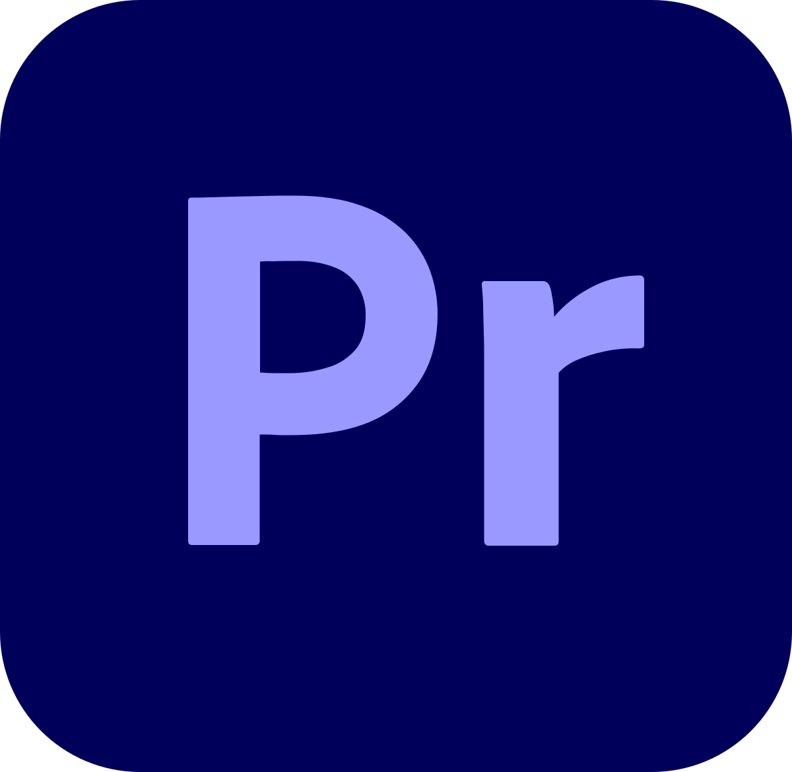
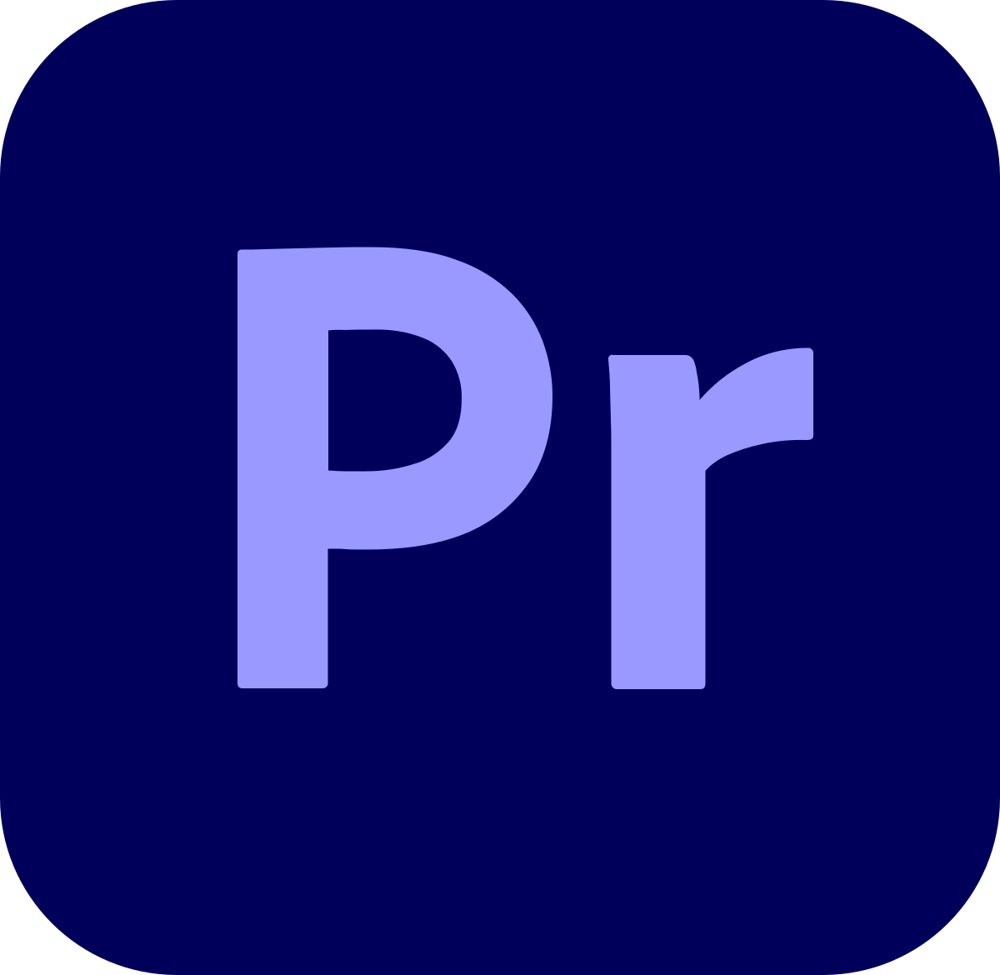
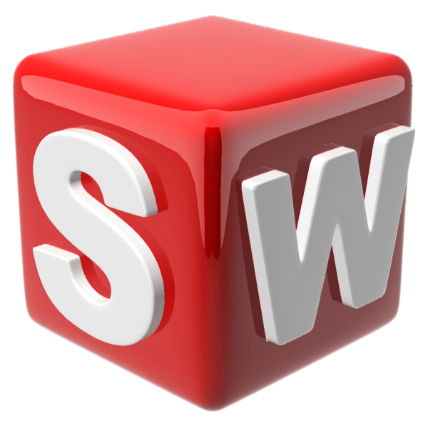
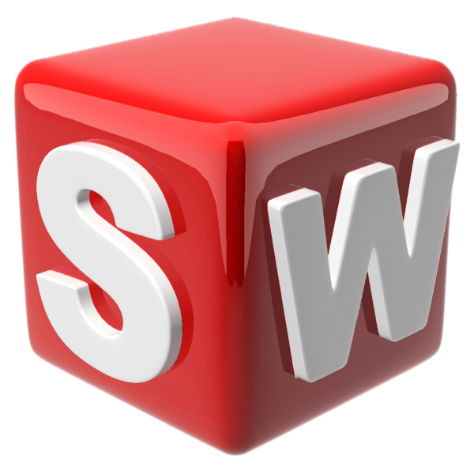

Over mij
Mijn naam is Yagmur. Ik ben een 21-jarige student. Ik studeer ICT & Media aan Fontys Hogescholen in Eindhoven. Ik heb een passie voor ontwerpen en ben altijd op zoek naar manieren om mijn creatieve vaardigheden te verbeteren. Ik zit momenteel in het tweede semester van mijn opleiding. Hiervoor moet ik een digitale portfolio maken.
Ik ben afgestudeerd op HAVO. Hierna heb ik 2,5 jaar Industrieel Product Ontwerpen (IPO) en Werktuigbouwkunde (WTB) gedaan op het hbo. Deze heb ik helaas niet afgerond door de omstandigheden met Covid-19. Daarna heb ik een korte periode Toegepaste Wiskunde (TW) gedaan. Deze opleiding voldeed niet aan mijn verwachtingen. Nadat ik goed onderzoek had gedaan en een meeloopdag had gevolgd, ben ik beland bij ICT. Ik vind het tot nu toe heel erg leuk en het past helemaal bij mij.
Mijn softwarevaardigheden sluiten aan bij deze branche. Bij IPO had ik al veel van de Adobe-programma's geleerd. Deze vaardigheden heb ik de afgelopen twee semesters bij ICT nog meer verbeterd. Ook had ik geleerd hoe ik met Solidworks moet werken. Dit heb ik tot nu toe nog niet nodig gehad, maar het is een handige skill om te hebben. Bij ICT heb ik vooral geleerd om te werken met Figma. Ik ben momenteel ook aan het oefenen met Blender.


 
 
 
